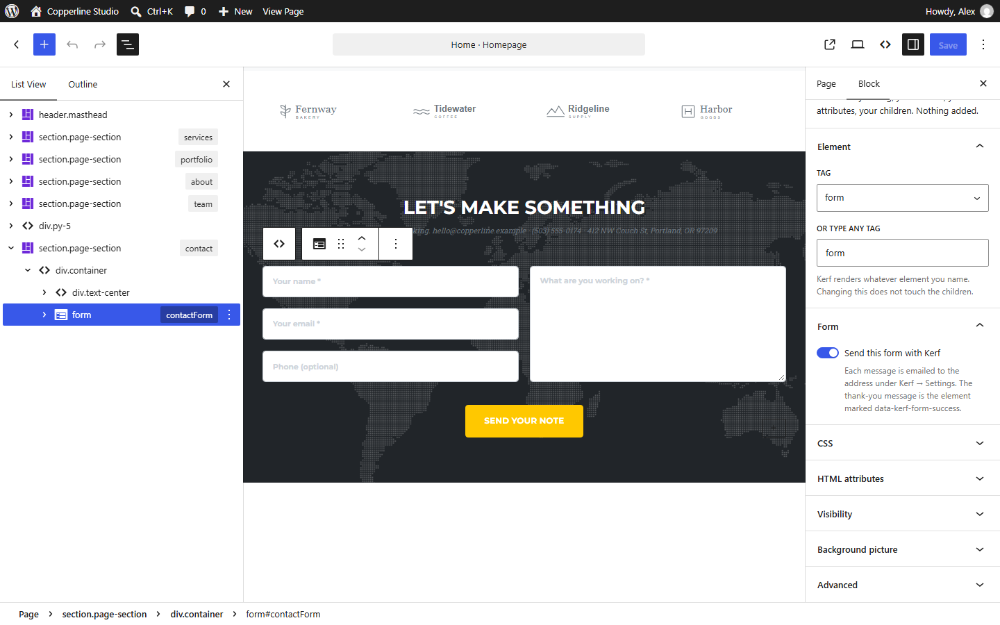

Your AI-Made Website’s Contact Form Doesn’t Send? How to Make It Work on WordPress

AI tools are very good at drawing contact forms: tidy labels, rounded inputs, a confident Send message button. Then a visitor fills it in, presses the button—and nothing reaches anyone.
That isn’t the AI’s mistake. A form in plain HTML only describes the fields; something on a server has to receive the message and deliver it. Static HTML has no such server. Here’s how to fix that without giving up the design.
Why the Form Does Nothing
An HTML <form> sends its fields to the address in its action attribute. AI-generated pages usually leave that empty, point it at #, or attach a small script that shows “Thanks!” without sending anything. Either way, the message goes nowhere.
The Usual Fixes
- A third-party form endpoint: point the form’s
actionat a hosted form service. It works on static hosting, but it’s one more account, often a monthly plan, and your messages live outside your site. - Rebuild the form with a WordPress form plugin: reliable, but the plugin outputs its own markup and classes, so the form stops looking like the design.
- Write a handler yourself: fine if you’re a developer and want to maintain it—including spam protection.
How Kerf Makes the Same Form Work
When Kerf imports a page with a form—other than a search form or one that already posts to an outside address—it keeps every <input>, <textarea>, <select> and button exactly as styled, and turns on Send this form with Kerf:
- Visitors submit the form on the page and see a clear status message.
- Kerf emails the submission to your site’s recipient address, with any uploaded files attached.
- Every submission is also saved under Kerf → Form entries, so a message isn’t lost if an email goes astray.

Spam Protection Included
Forms on a public site attract bots. Kerf adds an invisible honeypot field and a timing check, limits how often one address can submit, and keeps suspected spam in its own Spam folder under Form entries instead of your inbox.
A Tip on Email Delivery
Like any email a WordPress site sends, delivery depends on how your host handles mail. If messages land in spam or don’t arrive, a standard SMTP plugin connected to a proper mail service usually fixes it—and in the meantime every message is still waiting under Form entries.
Business Details, Too
The phone number and email next to the form usually appear in the header and footer as well. Kerf links them to Kerf → Site details, so changing them once updates every page—including the
tel:andmailto:links. Read the forms documentation →
Want to see it with your own design? Try Kerf free in your browser—drop in your ZIP and open the contact page in the editor.
Try Kerf with your own design in your browser
Test a live WordPress with Kerf pre-installed in WordPress Playground, or unlock lifetime updates from $49 one-time.
More from the Kerf blog
Pixel-Perfect HTML to WordPress: How to Convert a Design Without Changing a Pixel (and Prove It)
“Pixel-perfect” is the most overused promise in HTML-to-WordPress conversion. Here is where conversions drift, how to measure the result with a screenshot diff and a selector audit, and how Kerf keeps an AI-made design identical.
Read article →
Google Stitch to WordPress: How to Turn a Stitch Design into an Editable WordPress Site
Google Stitch designs good-looking screens and exports them as HTML with Tailwind CSS. Here is how to put those screens on WordPress as real, editable pages—without rebuilding them in a page builder.
Read article →
Lovable, Bolt or v0 Site to WordPress? An Honest Guide to What Works Today
Lovable, Bolt and v0 build React apps, and the page only exists after their build runs. Here are your real options for getting one onto WordPress—including when an HTML importer like Kerf can’t help yet.
Read article →